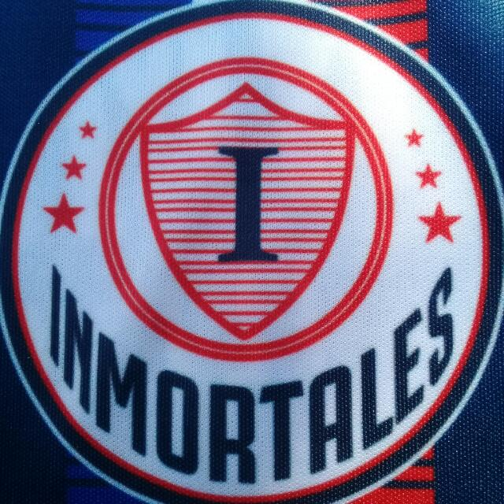
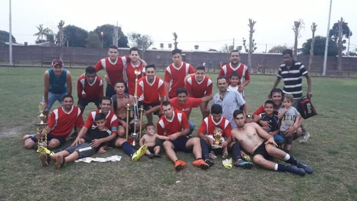
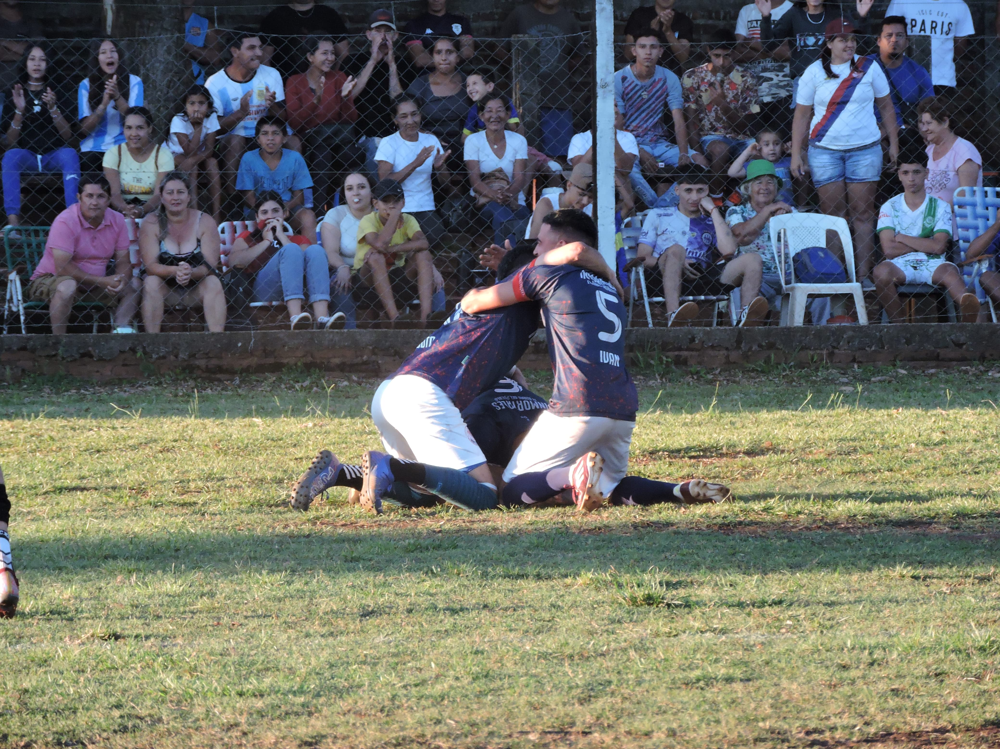
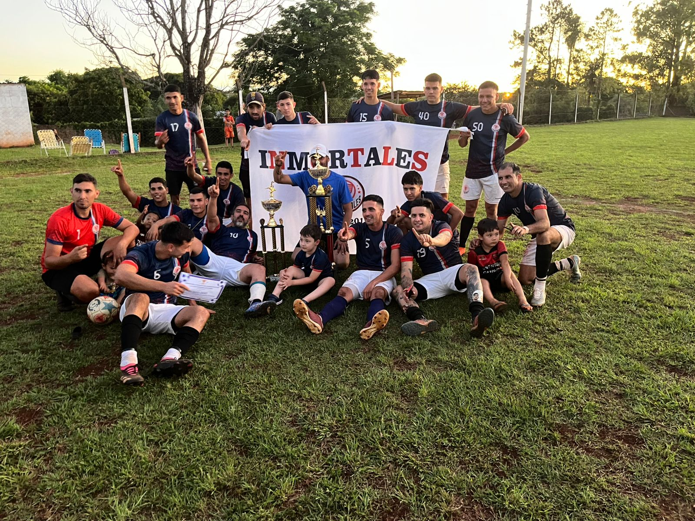

Inmortales
El equipo Inmortales se formó un 6 de septiembre del 2015, entre familiares y amigos de Santa Ana. El nombre fue elegido con una carga emotiva profunda: para inmortalizar a aquellos seres queridos que ya no están físicamente, pero que acompañan cada jugada desde el corazón.
En casi una década de historia, han logrado una vitrina envidiable: 2 torneos de campeones, 4 subcampeonatos y un tercer puesto. Son conocidos por su compromiso inquebrantable y por ser serios candidatos en cada edición de la liga.


